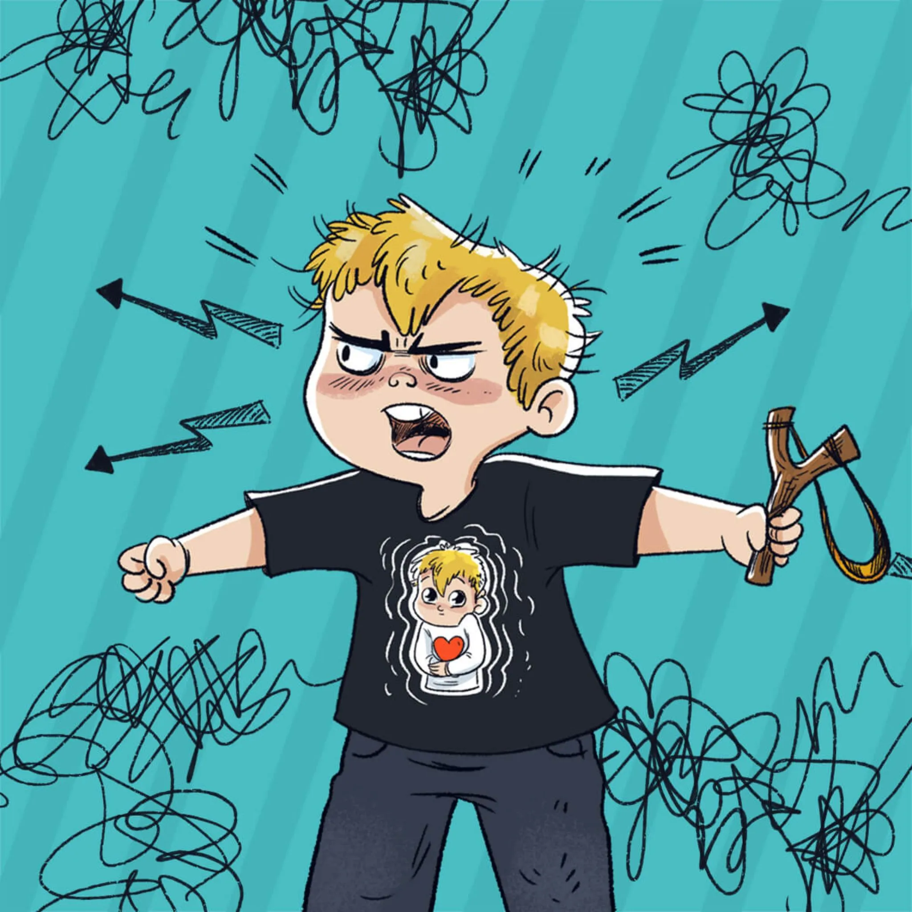

Jak opanować nerwy?
Wspaniałe bajki audio stworzone dla dzieci, które potrzebują wsparcia w radzeniu sobie z silnymi uczuciami i wyciszaniu po trudnym dniu. Poznaj Kasię, która znajduje spokój z magicznym kocykiem, i Helenkę, która odkrywa w sobie siłę wody wulkanu.
Odkryj serię